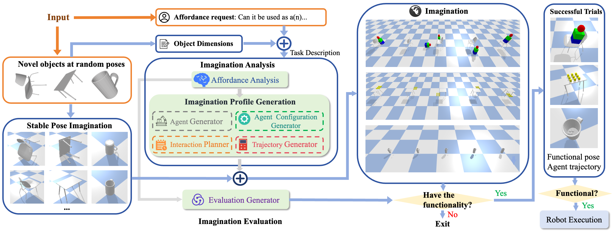

Framework
Given an unseen object model in a random pose and a novel affordance request, the algorithm first finds the object stable poses by stable pose imagination. The Imagination Analyzer analyzes the requested affordance and generates an imagination profile. The algorithm imagines the imagination profile with the object and loops for all stable poses. The Imagination Evaluator determines if the object possesses the requested affordance, if it is, the functional pose and feasible agent trajectories. If the object is functional, the robot manipulates a real agent following the imagined trajectory.